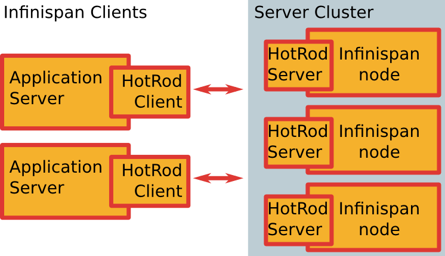

Infinispan Hands-On
Fabian Stäber JBoss OneDayTalk 2013About ConSol*
- Headquarters in Munich
- Since 1984
- More than 200 employees
- In-Memory DMS Consulting Team
Why is Caching Interesting?
Why Infinispan?
- Easy to use
- Standards compliant (soon)
- Powerful under the hood
Content
- Easy to use
- We will build a full JEE example in 15 minutes
- Standards compliant (soon)
- JCACHE (JSR 107) Intro
- Powerful under the hood
- Dive into Infinispan's distribution mode
Content
- Easy to use
- We will build a full JEE example in 15 minutes
- Standards complieat (soon)
- JCACHE (JSR 107) Intro
- Powerful under the hood
- Dive into Infinispan's distribution mode
Typical Applications of Infinispan
- Cache for databases
- Cache for other things
- Servlet responses
- Results of expensive computations
- etc
- NoSQL key/value data store
JEE Application Example
- JBoss Application Server
- Persistence layer with JPA and Hibernate
- REST interface
What is First and Second Level caching in Hibernate?
First-level cache
Associates with the Session object. Reduces the number of SQL queries it needs to generate within a given transaction. Hibernate uses this cache by default.Second-level cache
Associates with the Session Factory object. Scope is the entire application, not just a single transaction.Real-Live Example in Three Steps
- Example Project from Maven Archetype
- Enable Database Logging
- Enabling Infinispan L2 Cache
Maven Archetype
mvn archetype:generate \
-DarchetypeArtifactId=jboss-javaee6-webapp-archetype \
-DarchetypeGroupId=org.jboss.spec.archetypes \
-DarchetypeVersion=7.1.2.Final \
-DgroupId=de.consol.research \
-DartifactId=infinispan-jpa-example \
-Dversion=1.0-SNAPSHOT \
-Dname="Infinispan JPA Example" \
-DarchetypeCatalog=http://search.maven.org/remotecontent?filepath=archetype-catalog.xml \
-DinteractiveMode=false
cd infinispan-jpa-example
mvn clean verify jboss-as:run
Example Application
Example Application
Enable Database Logging
SET TRACE_LEVEL_SYSTEM_OUT 2;
Enable 2nd Level Cache
Inpersistence.xml:
<shared-cache-mode>DISABLE_SELECTIVE</shared-cache-mode>
<properties>
<property name="hibernate.cache.use_second_level_cache" value="true"/>
</properties>
Cache Modes
ALL |
All entity data is stored in the second-level cache for this persistence unit. |
NONE |
No data is cached in the persistence unit. The persistence provider must not cache any data. |
ENABLE_SELECTIVE |
Enable caching for entities that have been explicitly set with the @Cacheable
annotation.
|
DISABLE_SELECTIVE |
Enable caching for all entities except those that have been explicitly set with the @Cacheable(false)
annotation.
|
UNSPECIFIED |
The caching behavior for the persistence unit is undefined. The persistence provider's default caching behavior will be used. |
JBoss Management Console
Infinispan's Clustering Modes
- Invalidation: cluster-aware "local" caches that are able to invalidate entries if entries are modified elsewhere in the cluster.
- Replicated cache: Fully Replicated.
- Distributed cache: Consistent Hash.
- Additional (not on JBoss AS managment console): Client-Server mode
Replication Mode
- Read operations served from local node
- Write operations broadcast to each node
- Expensive to implement atomic operations
Distribution Mode
- Read often served from remote node
- Writes sent to defined set of nodes
- Inexpensive to implement atomic operations
- Different strategies with joining andeaving nodes.
Client-Server Mode
Content
- Easy to use
- We will build a full JEE example in 15 minutes
- Standards compliant (soon)
- JCACHE (JSR 107) Intro
- Powerful under the hood
- Dive into Infinispan's distribution mode
JCACHE - JSR 107

JSR 107 Core Interfaces
- CachingProvider: Configure CacheManagers
- CacheManager: Acquire Cache
- Cache: ConcurrentMap + eviction + backed by distributied topology
- Entry: Key-value pair
- Expiry
JSR 107 Timetable 2013
| Deliverable | Start | Finish |
|---|---|---|
| Public Review Ballot | 27 Aug | 9 Sep |
| Proposed Final Draft | 30 Sep | |
| Reference Implementation (https://github.com/jsr107/RI), Technology Compatibility Kit | 31 Oct | |
| Appeal Ballot (7 days) | 31 Oct | 7 Nov |
| Final Approval Ballot | 14 Nov | 28 Nov |
| Final Release | 28 Nov | 12 Dec |
Concurrent Map
The following code is not thread safe
private Cache<String, Integer> cache;
public void incrementUnsafe(String user) {
if ( ! cache.containsKey(user) ) {
cache.put(user, 0);
}
int current = cache.get(user);
cache.put("user", current + 1);
}
Concurrent Map
Synchronized only works within single VM.
private Cache<String, Integer> cache;
public synchronized void incrementThreadSafe(String user) {
if ( ! cache.containsKey(user) ) {
cache.put(user, 0);
}
int current = cache.get(user);
cache.put("user", current + 1);
}
Concurrent Map
Atomic Compare and Swap
private Cache<String, Integer> cache;
public void incrementAtomic(String user) {
cache.putIfAbsent(user, 0);
int current;
do {
current = cache.get(user);
}
while (!cache.replace(user, current, current + 1));
}
Concurrent Map
CAS operations can be understoodas an optimistic locking approach. Alternatively, caches provide
pessimistic lock / mutate / unlock.
Content
- Easy to use
- We will build a full JEE example in 15 minutes
- Standards compliant (soon)
- JCACHE (JSR 107) Intro
- Powerful under the hood
- Dive into Infinispan's distribution mode
Simple Distributed Hash
Distributed Hash with Back-up on "Neighbor to the Right"
Distributed Hash with Back-up on "Neighbor to the Right"
Problem:- Immediatly after Node failure: Back-up node may become overloaded, because gets all keys from failing neighbor.
- Rebalance: Nearly all keys need to be remapped when # nodes decreases / increases.
Distributed Hash with Secondary Back-up Hash
Distributed Hash with Secondary Back-up Hash
Problem:Immediatly after Node failure: Back-up node may become overloaded, because gets all keys from failing neighbor.- Rebalance: Nearly all keys need to be remapped when # nodes decreases / increases.
Consistent Hashing
Consistent Hashing
- On Node Failure: Load is distributed on #segments / #nodes nodes.
- Rebalance: Only #segments / #nodes segments need to be remapped.
- Default Num Segments for Infinispan is 60
- It does not make sense to configure num segments < num nodes, because then nodes will be empty.
Demo
infinispan-consistent-hash-visualization/index.htmlDemo
Demo
- Num Keys: 600, Num Segments: 6.
- Keys per segment: ca 100
- Num Nodes 6: Everything evenly distributed (100 primary keys per Node)
- Num Nodes 5: One node has about 200 primary keys, the others have 100 primary keys.
- Num Nodes: 7: One node does not have any primary keys, the others have 100 primary keys.
Summary
Infinispan is...- Easy to use
- Standards compliant (soon)
- Powerful under the hood